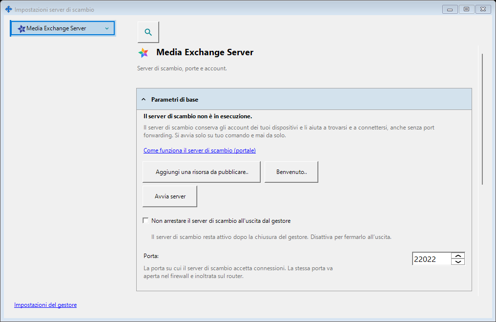
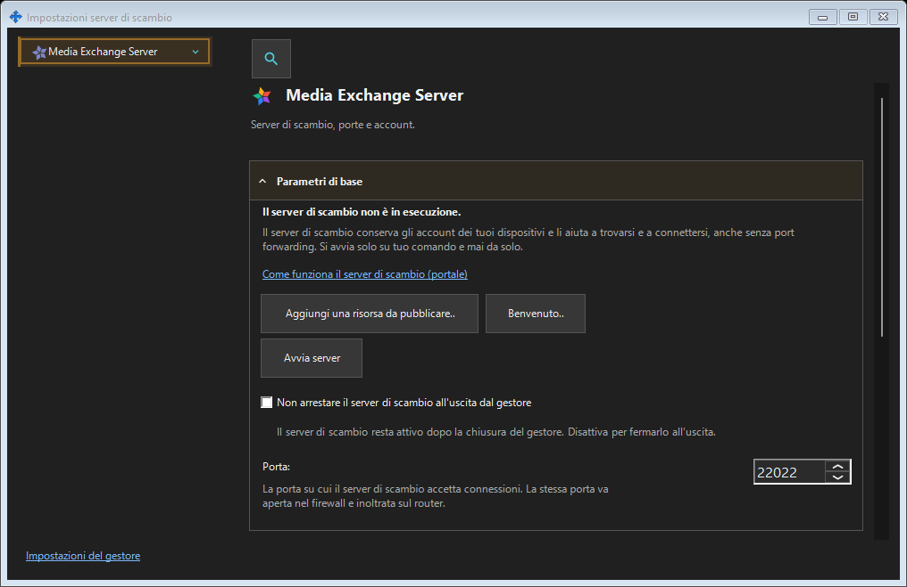

Impostazioni server di scambio
Scopo
SFTP: porta, limite connessioni, rete locale e servizio Windows. Server di scambio: indirizzo, TLS, account, dispositivi, inviti, servizio, registri e amministrazione remota.


In questo ordine
Aprire dal menu dell’area di notifica o dai collegamenti dei componenti. Aprire e chiudere non avvia né arresta alcun server. L’accesso remoto non richiede il server locale.
Gli elementi
Impostazioni server di scambio
SFTP: porta, limite connessioni, rete locale e servizio Windows. Server di scambio: indirizzo, TLS, account, dispositivi, inviti, servizio, registri e amministrazione remota. Aprire dal menu dell’area di notifica o dai collegamenti dei componenti. Aprire e chiudere non avvia né arresta alcun server. L’accesso remoto non richiede il server locale.
Impostazioni del gestore · Impostazioni condivisione SFTP · Impostazioni server di scambio